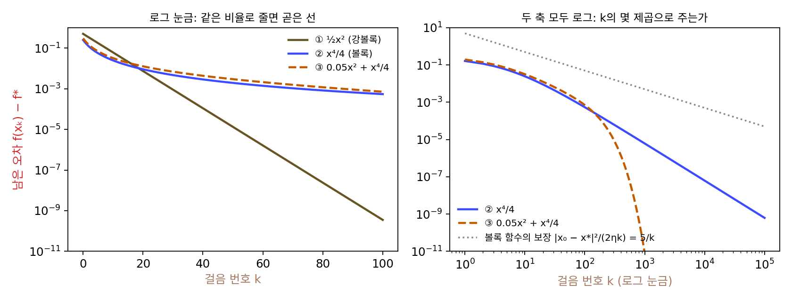
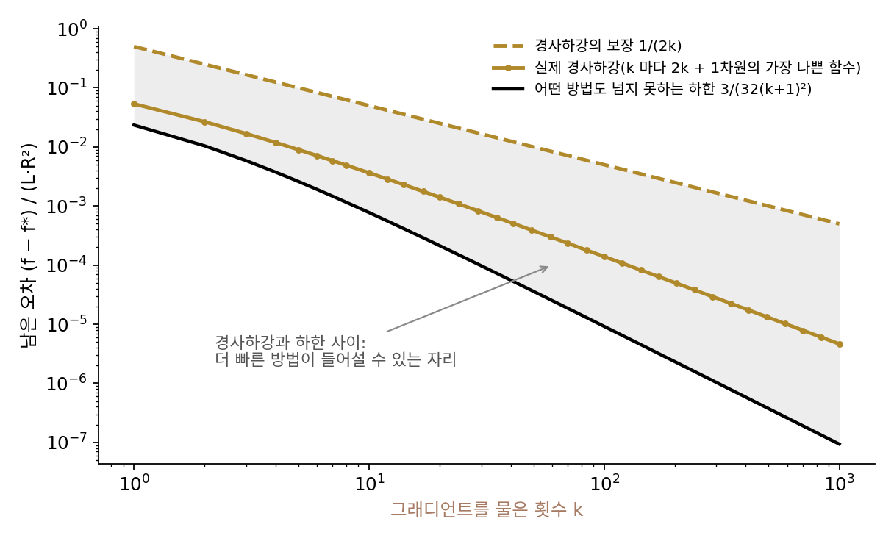
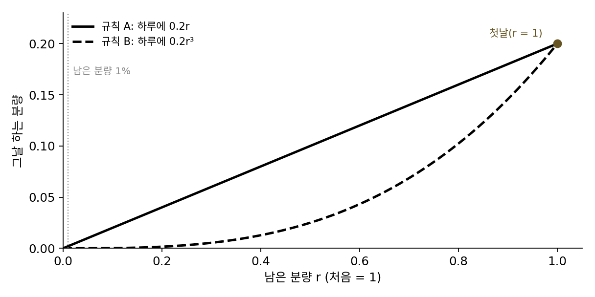
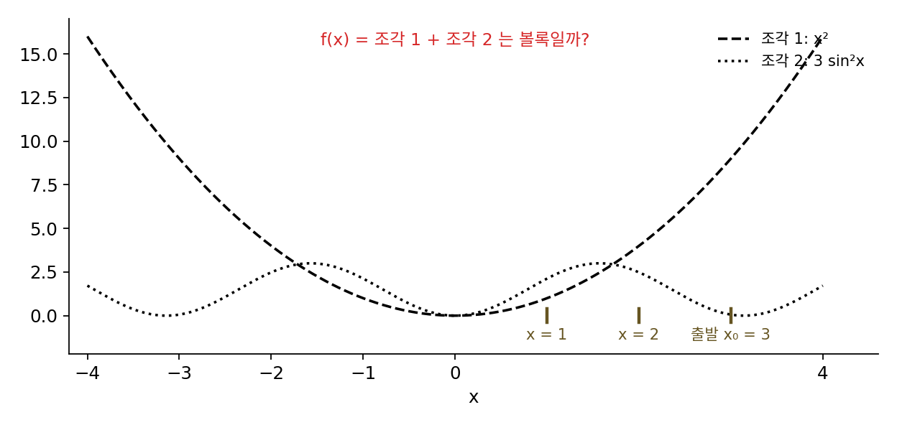
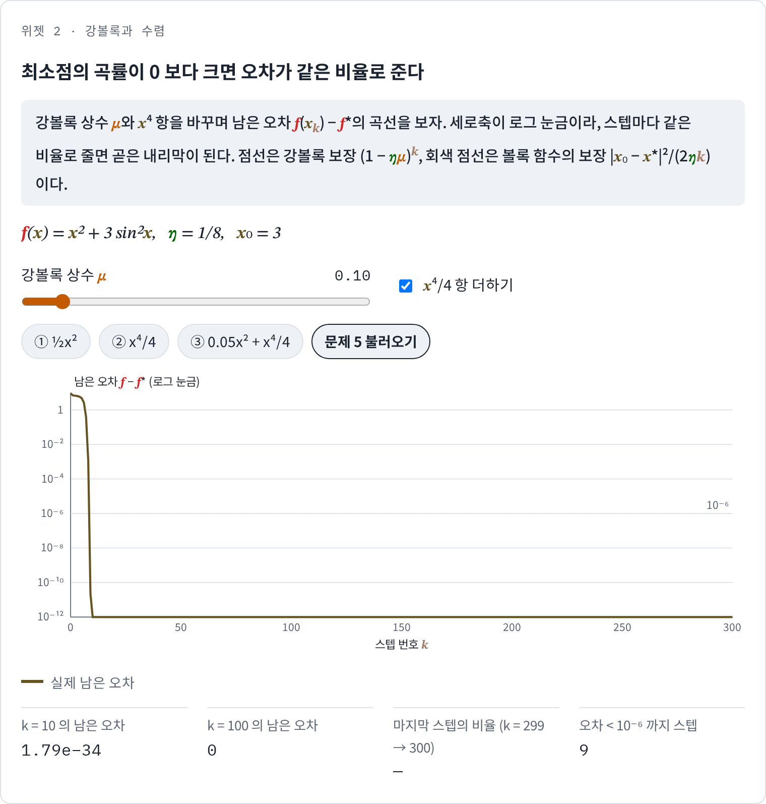
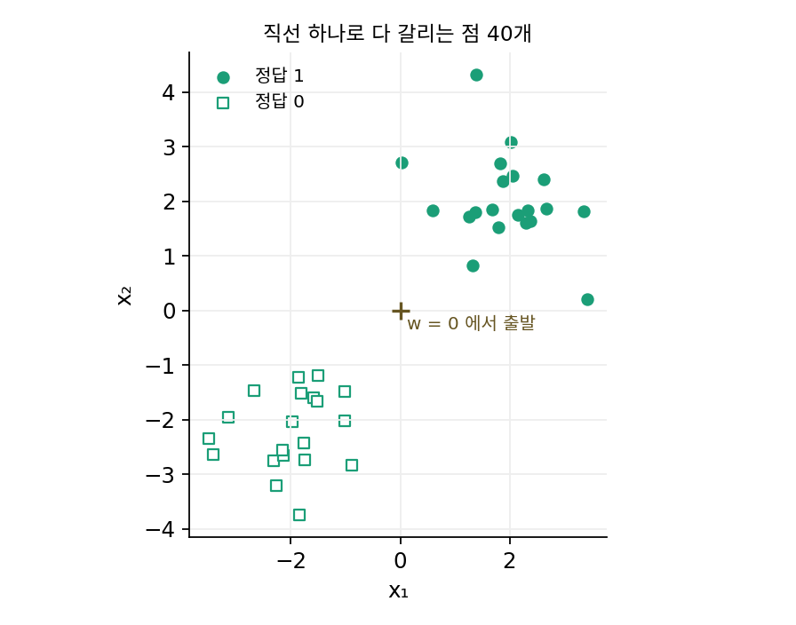

강볼록: 오차가 스텝마다 같은 비율로 준다
볼록 함수라면 경사하강이 멈춘 곳이 가장 낮은 곳이다. 그런데 학습을 돌려 본 사람이 실제로 묻는 것은 「언젠가 닿는가」보다 「몇 스텝이면 닿는가」다. 한 스텝에 몇 분이 걸리는 큰 모델에서는 백 스텝과 만 스텝이 하루와 몇 달의 차이가 된다. 볼록 함수 두 개, 포물선 ½x²와 4차 함수 x⁴/4는 모두 최소점이 0이고 극소가 곧 최소다. 둘을 같은 학습률로 내려가면 같은 스텝 수로 최소점에 닿을까?
포물선과 4차 함수를 같은 학습률로
최소점 근처의 곡률만 다르고 나머지는 닮았기 때문에 이 두 함수를 골랐다. 둘 다 볼록이고, 최소점이 x = 0 한 곳이며, 출발점 x₀ = 1에서는 그래디언트가 똑같이 1이다. 다른 점은 최소점에서의 곡률이다. 포물선은 곡률이 어디서나 1이고, 4차 함수는 곡률 3x²가 최소점에서 0이 된다. 학습률 η = 0.1로 내려가면서 남은 오차 f(xₖ) − f*(최솟값과의 차이)와, 한 스텝 사이에 남은 오차가 몇 배가 되는지를 적었다.
| 스텝 k | ① ½x²의 남은 오차 | 한 스텝의 비 | ② x⁴/4의 남은 오차 | 한 스텝의 비 |
|---|---|---|---|---|
| 0 | 0.5000 | 0.8100 | 0.2500 | 0.6561 |
| 1 | 0.4050 | 0.8100 | 0.1640 | 0.7133 |
| 10 | 0.0608 | 0.8100 | 0.0247 | 0.8802 |
| 20 | 0.00739 | 0.8100 | 0.00903 | 0.9261 |
| 50 | 1.33 × 10⁻⁵ | 0.8100 | 0.00193 | 0.9653 |
| 100 | 3.53 × 10⁻¹⁰ | 0.8100 | 0.000542 | 0.9815 |
| 1000 | 1.53 × 10⁻⁹² | 0.8100 | 6.14 × 10⁻⁶ | 0.9980 |
포물선은 스텝마다 남은 오차가 꼭 0.81배가 된다. 바닥까지의 거리가 스텝마다 0.9배가 되고, 남은 오차는 거리의 제곱에 비례하기 때문이다. 4차 함수는 처음 몇 스텝은 포물선보다 오히려 빨리 줄지만(비 0.66, 0.71), 비가 점점 1로 다가가 스텝이 갈수록 거의 줄지 않는다. 19스텝째에 포물선에 따라잡히고, 남은 오차가 10⁻⁶ 아래로 내려가는 데 포물선은 63스텝, 4차 함수는 2491스텝이 걸린다.
차이가 어디서 오는지는 그래디언트를 바닥까지의 거리로 나눠 보면 드러난다. 포물선의 그래디언트 f′(x) = x는 거리에 정비례해서, 거리가 1이든 0.01이든 그래디언트 ÷ 거리가 1이다. 4차 함수의 그래디언트 x³은 거리가 1, 0.1, 0.01일 때 그래디언트 ÷ 거리가 1, 0.01, 0.0001로 떨어진다. 경사하강의 스텝은 그래디언트에 비례하므로, 4차 함수에서는 최소점에 다가갈수록 스텝이 거리보다 훨씬 빨리 짧아진다. 남은 거리에 비해 스텝이 자꾸 짧아지니 같은 비율로 줄어들 수가 없다. 최소점 근처에서 그래디언트가 거리에 비례해 버텨 주려면, 최소점에서도 곡률이 0보다 큰 어떤 값 이상이어야 한다.
이렇게 어느 점에서 그은 접선 위에 곡률 μ(뮤)인 포물선을 얹어도 그래프가 그 포물선보다 아래로 내려가지 않는 함수를 강볼록 (곡률이 어디서나 μ 이상인 볼록 / strongly convex) 함수라 하고, μ를 강볼록 상수라 한다.
두 번 미분할 수 있으면 곡률이 어디서나 μ 이상이라는 말과 같다. 포물선 ½x²는 μ = 1인 강볼록 함수이고, x⁴/4는 최소점에서 곡률이 0이라 볼록이지만 강볼록은 아니다.
강볼록이면 왜 같은 비율로 줄어드는지는 부등식 두 개를 잇기만 하면 보인다. 첫째는 그래디언트의 립시츠 상수 L(곡률의 상한)이 주는 약속으로, 학습률을 η ≤ 1/L로 잡으면 한 스텝에 손실이 적어도 (η/2)|∇f|²만큼 준다. 둘째는 강볼록이 주는 약속으로, 위 부등식을 x′에 대해 가장 작게 만들어 보면 |∇f(x)|² ≥ 2μ(f(x) − f*)가 나온다. 남은 오차가 있는 한 그래디언트가 그만큼 버텨 준다는 뜻이다. 둘을 이으면 한 스텝에 줄어드는 양이 적어도 ημ × (남은 오차)가 되어 다음이 나온다.
왼쪽 식은 강볼록 함수에 대한 약속으로, 스텝마다 남은 오차가 1 − ημ배 아래로 준다고 말한다. 포물선(μ = 1, η = 0.1)이라면 보장된 비는 0.9이고, 실제 비 0.81은 그 안에 있다. 오른쪽 식은 강볼록이 아닌 볼록 함수에 대한 약속인데, 이때는 비율이 아니라 1/k로 줄어든다는 것까지만 장담할 수 있다. 4차 함수(x₀ = 1, η = 0.1, 출발점 아래 구간에서 L = 3)라면 보장은 5/k이고, 100스텝에서 0.05, 1000스텝에서 0.005다. 보장은 볼록 함수 가운데 가장 나쁜 경우까지 묶어 둔 상한이기 때문에, 실제 오차 0.000542, 6.14 × 10⁻⁶은 보장보다 훨씬 작다. 그래도 차이의 종류는 분명하다. 비율로 줄면 정확도의 자릿수가 스텝 수에 비례해 늘고, 1/k로 줄면 자릿수 하나를 더 얻는 데 스텝이 열 배씩 든다.
두 가지를 섞은 ③ 0.05x² + x⁴/4(μ = 0.1)는 처음에는 4차 함수처럼 기어가다가, 최소점 근처에서 곡률 0.1이 버텨 주면서 남은 오차가 스텝마다 0.9801배(거리로 0.99배)씩 줄어드는 곧은 내리막으로 바뀌어, 10⁻⁶ 아래까지 418스텝이 걸린다. 학습률은 1/L을 넘을 수 없으니 1 − ημ는 1 − μ/L보다 작아질 수 없다. 가장 큰 곡률과 가장 작은 곡률의 비 L/μ가 스텝 수를 정한다는 이야기는 경사하강의 학습률을 다룰 때 「조건수」라는 이름으로 다시 나온다.

역사: 폴랴크의 조건과 네미롭스키·유딘의 물음
위의 증명에서 강볼록을 쓴 곳은 그래디언트 길이의 제곱이 남은 오차의 2μ배 이상이라는 부등식 한 군데뿐이었다. 소련의 수학자 보리스 폴랴크(Boris Polyak)는 1963년 소련의 계산수학 학술지에 실은 「범함수를 최소화하는 그래디언트 방법」(범함수는 함수를 넣으면 수 하나를 내놓는 함수)에서, 바로 이 부등식 하나만 있으면 경사하강이 같은 비율로 줄어든다는 것을 보였다. 같은 해 폴란드의 스타니스와프 워야시에비치(Stanisław Łojasiewicz)는 해석 함수에 대해 더 넓은 꼴의 부등식을 냈고, 그래서 지금은 이것을 폴랴크–워야시에비치 조건이라 부른다. 폴랴크–워야시에비치 조건이 강볼록과 무엇이 다른지는 아래 문제 5에서 직접 따져 본다. 2016년 하메드 카리미(Hamed Karimi)와 동료들은 「폴랴크–워야시에비치 조건 아래에서 그래디언트 방법과 근접 그래디언트 방법의 선형 수렴」에서 이 오래된 조건을 기계학습의 여러 방법에 다시 들고 나왔다.
1970년대에 소련의 아르카디 네미롭스키(Arkadi Nemirovski)와 다비드 유딘(David Yudin)은 물음을 뒤집었다. 특정 방법이 얼마나 빠른지가 아니라, 함수에 그래디언트를 몇 번 물어봐야 하는지를 물은 것이다. 1979년에 러시아어로, 1983년에 영어로 낸 책 『최적화에서 문제의 복잡도와 방법의 효율』에서 그들은 함수의 종류(볼록인지, 강볼록인지, 매끄러운지)마다 그래디언트만 물어보는 어떤 방법도 넘을 수 없는 한계를 따졌다. 이 틀에서 보면 볼록과 강볼록은 계산의 편의를 위한 가정이 아니라 문제의 어려움을 가르는 경계다. 매끄러운 볼록 함수에서 경사하강의 1/k는 그 한계에 못 미쳤고, 경사하강과 한계 사이를 메우는 방법은 지난 스텝들을 기억해 두는 쪽에서 나왔다.


폴랴크의 조건은 |∇f|² ≥ 2μ(f − f*)라는 부등식 하나이고 증명도 짧잖아요. 그게 1963년에야 나왔다는 게 신기해요.

증명은 짧아요. 그런데 그 한 줄이 핵심이라는 걸 알아보려면 무엇이 먼저 있어야 할까요? 위에서 강볼록이 쓰인 곳을 찾을 때 우리가 한 일을 떠올려 보세요.
증명을 한 줄씩 보면서 어느 가정이 실제로 쓰였는지 찾았어요… 아, 강볼록을 가정한 증명이 먼저 있어야 거기서 덜어 낼 수 있네요.

네미롭스키랑 유딘 쪽은 더 이상해요. 「어떤 방법도 이보다 빠를 수 없다」고 하려면 세상의 모든 방법을 다 따져 봐야 하잖아요. 아직 안 나온 방법까지요.

그래서 그들은 방법이 어떻게 생겼는지는 묻지 않고, 함수에 그래디언트를 몇 번 물어보는지만 셌어요. 그렇게 세기로 정하자 아직 안 나온 방법까지 한꺼번에 따질 수 있게 됐고요.

그 틀에서 보니까 경사하강의 1/k가 한계에 못 미친다는 게 드러난 거네요. 방법이 나오기도 전에 더 빠른 방법이 있을 자리부터 보인 거고요.

볼록일 뿐인 손실은 1/k로 기어가고 강볼록이면 비율로 준다면, 볼록한 손실에 무언가를 더해 강볼록으로 바꿀 수는 없을까요?
ML에서: 가중치 감쇠는 강볼록 상수를 더한다
볼록한 손실에 가중치 길이의 제곱 페널티 (λ/2)|w|²을 더하면, 페널티의 곡률 λ(람다)가 손실의 곡률에 그대로 더해져 강볼록 상수가 적어도 λ가 된다. 선형 회귀에 이 페널티를 붙인 것이 능형 회귀(ridge regression)이고, 신경망 학습에서는 같은 페널티를 가중치 감쇠라 부른다. 로지스틱 회귀에 이 페널티를 더하면 무엇이 달라지는지는 아래 문제 6에서 직접 잰다.
문제 4. 남은 숙제를 줄이는 두 규칙
방학 숙제를 처음 분량의 비율 r로 적는다(처음 r = 1). 규칙 A는 매일 남은 분량의 20%를 한다(r ← 0.8r). 규칙 B는 매일 남은 분량의 세제곱의 20%를 한다(r ← r − 0.2r³). (가) 첫날이 끝나면 두 규칙의 남은 분량은? (나) 10일, 100일 뒤에는? (다) 남은 분량이 1% 밑으로 내려가는 날은 각각 며칠째인가?

첫날은 A가 1 − 0.2 = 0.8, B도 1 − 0.2 × 1 = 0.8이야. 첫날은 똑같네.

첫날이 같으면 끝나는 날도 비슷할까요? 둘째 날부터 계산해 볼까요?

A는 0.64, 0.512, 0.41, …이고 B는 0.6976, 0.6297, 0.5798, …예요. 10일 뒤 A는 0.1074, B는 0.4236이에요. 100일 뒤에는 A가 거의 0인데 B는 아직 0.154나 남았어요. 1% 밑으로는 A가 21일째, B는… 24991일째요. 68년이네요.
B는 남은 분량이 줄수록 하루에 하는 비율이 같이 줄어. 하루 비율이 1 − 0.2r²라서 r = 1이면 0.8, r = 0.5면 0.95, r = 0.1이면 0.998이야. 남은 분량이 0에 가까울수록 거의 안 움직여.
B의 하루치 0.2r³은 어떤 함수를 경사하강할 때의 스텝과 같은 모양이죠?
x³이 나오는 함수라면… x⁴/4를 미분하면 x³이니까, 학습률 0.2로 x⁴/4를 내려가는 거예요. A는 0.2r이니까 ½x²를 학습률 0.2로 내려가는 거고요.

그럼 첫날이 같았던 건 출발점에서 두 함수의 그래디언트가 똑같이 1이었기 때문이고, 그 뒤가 갈린 건 최소점 0 근처의 곡률이 1이냐 0이냐의 차이네요.
그래요. 출발점의 그래디언트는 첫 스텝만 정해요. 비율로 줄어드는지는 바닥 근처의 곡률이 정하고요.
문제 5. 볼록이 아닌데 비율로 주는 함수
f(x) = x² + 3 sin²x를 생각하자. (가) 이 함수는 볼록인가? x = 1과 2를 잇는 현으로 확인하라. (나) 곡률의 상한이 L = 8이라면, 학습률 1/8로 x₀ = 3에서 내려가면 남은 오차가 10⁻⁶ 아래로 내려가는 데 몇 스텝이 걸리는가? (다) 강볼록이 아닌데도 빨리 닿았다면, 이 절의 증명에서 무엇이 여전히 성립했기 때문인가? (풀어 본 뒤 위젯 2의 「문제 5 불러오기」로 확인해 보자.)

(가)부터 현을 그어 볼게요. f(1) = 3.1242, f(2) = 6.4805라 현의 가운데 높이는 4.8023인데, f(1.5) = 5.2350이에요. 그래프가 현보다 위에 있어요. 볼록이 아니네요. 곡률 2 + 6cos 2x도 −4까지 내려가고요.
볼록이 아니면 이 절의 비율 보장은 못 쓰잖아. (나)는 오래 걸리거나 엉뚱한 데 멈출 것 같아.
돌려 보면 3, 2.3548, 2.1411, 1.9466, 1.7161, 1.3945, 0.9163, 0.325, 0.0168로 바로 내려가. 9스텝 만에 10⁻⁶ 아래야.

내 예상이 빗나갔네. 볼록이 아니어도 빨리 닿았어.
이 절의 증명이 강볼록에서 빌려 쓴 부등식은 무엇이었죠? 그 부등식이 이 함수에서도 성립하는지 보세요.

|f′|² ≥ 2μ(f − f*)였어요. 그런데 μ를 어떻게 정하죠? 곡률은 −4까지 내려가는데요.
곡률 말고, 부등식의 두 변을 직접 나눠 보면요?
구간 [−6, 6]에서 |f′|²/(2(f − f*))의 가장 작은 값을 재니… 0.1755예요. 0까지 안 내려가요. 그러니 μ = 0.1755로 그 부등식이 성립해요.
그럼 보장되는 비는 1 − 0.1755/8 = 0.978이네. 실제로는 훨씬 빨랐고.
이 비가 0까지 안 내려가는 건, x ≠ 0이면 늘 f′(x)·x > 0이라 그래디언트가 0인 곳이 0 하나뿐이라서겠네요.
그럼 그래디언트가 0인데 남은 오차는 0이 아닌 점이 있는 함수라면요?
그 점에서는 |f′|² = 0인데 오른쪽은 양수라… 부등식이 깨져요.
그런 점이 있는 함수를 앞에서 본 적 있죠?

휨 s = 1인 W자 4차 함수의 오른쪽 골짜기(x = 1.3322)요! 거기서 멈췄잖아요.

그럼 폴랴크의 조건은 「그래디언트가 0인 곳은 최소점뿐」이라는 말을 품고 있었네요. 강볼록은 폴랴크의 조건을 성립시키는 넉넉한 경우 하나이고, 비율로 줄어드는 데 꼭 필요한 건 그 부등식 쪽이에요.
위젯 2에서 문제 5 설정을 불러와, 로그 눈금 위의 남은 오차 곡선과 10⁻⁶ 아래까지 걸린 스텝 수를 직접 확인해 보세요.

문제 6. 다 가를 수 있는 데이터의 로지스틱 회귀
씨앗 3으로 뽑은 2차원 점 40개(두 덩어리, 직선 하나로 완전히 갈린다)에 편향 없는 로지스틱 회귀를 학습률 0.5로 맞춘다. (가) 페널티 없이(λ = 0) 100, 1000, 10000스텝 뒤의 손실과 가중치 길이 |w|는? (나) 손실은 볼록 함수인데 왜 이렇게 될까? 강볼록인가? (다) 가중치 감쇠 λ = 0.01을 더하면 어떻게 되는가?

(가)는 손실이 0.0042, 0.00052, 0.000061로 계속 줄어요. 잘 수렴하고 있네요. 그런데 가중치 길이는 2.27, 3.34, 4.53으로 계속 커지는데요. 10만 스텝 가도 5.81이에요.
가중치 길이가 계속 커지는데 「수렴한다」고 해도 될까요? 최소점은 어디에 있죠?
직선으로 다 갈리니까… 가중치를 키울수록 모든 점에서 정답 클래스의 확률이 1에 가까워지고, 손실도 더 줄어요.
그럼 손실이 0이 되는 가중치는 있나요?
없어요. 확률이 1에 닿지는 않으니까요. 최소점이 무한히 먼 데 있는 거예요. 멈출 자리가 없으니 가중치가 계속 자라고요. 손실이 준다고 가중치까지 수렴하는 건 아니었네요.
그래서 강볼록일 수가 없어. 가중치가 커질수록 손실 곡선이 평평해져서 곡률이 0으로 가니까. 손실 × 스텝 수가 0.42, 0.52, 0.61로 거의 일정한 걸 보면 1/k 꼴로 기어가고 있는 거야.
λ = 0.01을 더하면 목적함수의 곡률은 어디서나 얼마 이상이 되죠? 그때 가중치와 그래디언트는 어떻게 될까요?
곡률이 적어도 0.01이니까 강볼록이에요. 돌려 보면 가중치 길이가 1.9070에서 멈춰요.
목적함수 그래디언트 길이는 1000스텝에 2.7 × 10⁻⁷, 10000스텝이면 3.1 × 10⁻¹⁶이야. 스텝마다 0.99257배로 줄어.
보장된 비 1 − ηλ와 견주면요?
0.995니까 실제가 조금 더 빨라요. 데이터 손실의 곡률이 0.01 위에 조금 더 얹혀 있으니까요. 페널티가 없으면 최소점이 무한히 멀어서 기어가고, 페널티를 넣으면 최소점이 생겨서 비율로 닿는 거네요.